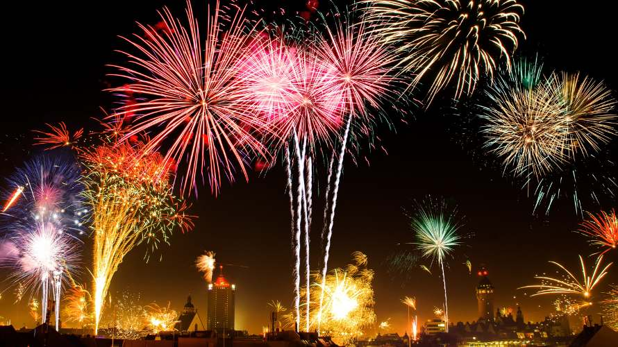
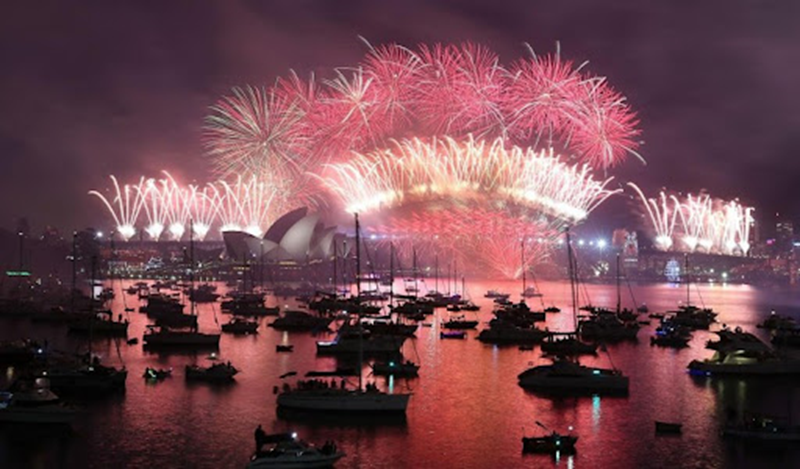
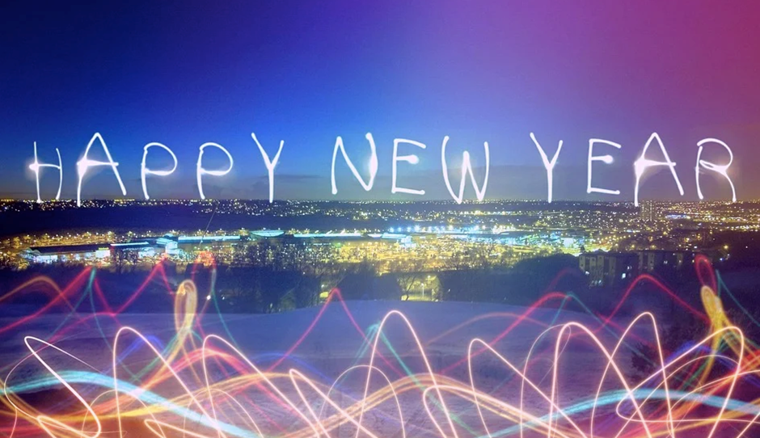

ประวัติวันปีใหม่
วันปีใหม่มีประวัติความเป็นมาซึ่งเปลี่ยนแปลงไปตามยุคสมัยและความเหมาะสม ตั้งแต่ในสมัยเริ่มแรกเมื่อชาวบาบิโลเนียเริ่มคิดค้นการใช้ปฏิทิน โดยอาศัยระยะต่าง ๆ ของดวงจันทร์เป็นหลักในการนับ เมื่อครบ 12 เดือน ก็กำหนดว่าเป็น 1 ปี และเพื่อให้เกิดความพอดีระหว่างการนับปีตามปฏิทินกับปีตามฤดูกาล จึงได้เพิ่มเดือนเข้าไปอีก 1 เดือน เป็น 13 เดือนทุก 4 ปี
ต่อมาชาวอียิปต์ ชาวกรีก และชาวเซมิติก ได้นำปฏิทินของชาวบาบิโลเนียมาดัดแปลงแก้ไขอีกหลายคราวเพื่อให้ตรงกับฤดูกาลมากยิ่งขึ้นจนถึงสมัยของกษัตริย์จูเลียส ซีซาร์ ได้นำความคิดของนักดาราศาสตร์ชาวอะเลกซานเดรียชื่อ เฮมดัล มาปรับปรุง ให้ปีหนึ่งมี 365 วัน ในทุก ๆ 4 ปี ให้เติมเดือนที่มี 28 วัน เพิ่มขึ้นอีก 1 วัน เป็น 29 วัน คือเดือนกุมภาพันธ์ เรียกว่า ปีอธิกสุรทิน
เมื่อเพิ่มในเดือนกุมภาพันธ์มี 29 วันในทุก ๆ 4 ปี แต่วันในปฏิทินก็ยังไม่ค่อยตรงกับฤดูกาลนัก คือเวลาในปฏิทินยาวกว่าปีตามฤดูกาล เป็นเหตุให้ฤดูกาลมาถึงก่อนวันในปฏิทิน
วันที่ 21 มีนาคมตามปีปฏิทินของทุกปี จะเป็นช่วงที่มีเวลากลางวันและกลางคืนเท่ากัน คือเป็นวันที่ดวงอาทิตย์จะขึ้นตรงทิศตะวันออก และลับลงตรงทิศตะวันตกพอดี เรียกว่า วสันตวิษุวัต
แต่ในปี ค.ศ. 1582 (ตรงกับ พ.ศ. 2125) วสันตวิษุวัตกลับไปเกิดขึ้นในวันที่ 11 มีนาคม แทนที่จะเป็นวันที่ 21 มีนาคม ดังนั้น สมเด็จพระสันตะปาปาเกรกอรีที่ 13 จึงปรับปรุงแก้ไขโดยหักวันออกไป 10 วันจากปีปฏิทิน และให้วันหลังจากวันที่ 4 ตุลาคม ค.ศ. 1582 แทนที่จะเป็นวันที่ 5 ตุลาคม ก็ให้เปลี่ยนเป็นวันที่ 15 ตุลาคมแทน (เฉพาะปีดังกล่าว) ปฏิทินแบบใหม่นี้จึงเรียกว่า ปฏิทินเกรโกเรียน จากนั้นได้ปรับปรุงประกาศใช้วันที่ 1 มกราคม เป็นวันเริ่มต้นของปีเป็นต้นมา

การเฉลิมฉลองและประเพณีทั้งดั้งเดิมและสมัยใหม่
วันสิ้นปี
วันแรกของเดือนมกราคมหมายถึงการเริ่มต้นปีใหม่ หลังจากผ่านพ้นช่วงเวลาแห่งการรำลึกถึงปีที่ผ่านมา รวมถึงทางวิทยุ โทรทัศน์ และหนังสือพิมพ์ ซึ่งจะเริ่มในต้นเดือนธันวาคม ในประเทศต่าง ๆ ทั่วโลก สื่อสิ่งพิมพ์ต่าง ๆ มีบทความส่งท้ายปลายปีที่รวบรวมการเปลี่ยนแปลงในช่วงปีที่แล้ว ในบางกรณี สื่อสิ่งพิมพ์อาจกำหนดงานตลอดทั้งปีด้วยความหวังว่าควันที่ปล่อยออกมาจากเปลวไฟจะนำชีวิตใหม่มาสู่บริษัท นอกจากนี้ยังมีบทความเกี่ยวกับการเปลี่ยนแปลงตามแผนหรือคาดว่าจะเกิดขึ้นในปีหน้า
วันนี้เป็นวันเฉลิมฉลองทางศาสนา แต่ตั้งแต่คริสต์ทศวรรษ 1900 เป็นต้นมา ก็ได้กลายเป็นโอกาสเฉลิมฉลองในคืนวันสิ้นปี ในวันที่ 31 ธันวาคม โดยมีงานเฉลิมฉลองในที่สาธารณะ (ซึ่งมักเกี่ยวข้องกับการแสดงดอกไม้ไฟ) และประเพณีอื่น ๆ ที่มุ่งเน้นไปที่เวลาเที่ยงคืนและปีใหม่ที่กำลังจะมาถึง บริการยามค่ำคืนยังคงเป็นที่สังเกตในหลายครั้ง[1]
วันขึ้นปีใหม่
การเฉลิมฉลองและกิจกรรมที่จัดขึ้นทั่วโลกในวันที่ 1 มกราคม ซึ่งเป็นวันขึ้นปีใหม่โดยทั่วไป เช่น การเดินขบวนพาเหรดสำคัญในหลายแห่ง การกระโดดแบบหมีขั้วโลก โดยชมรมหมีขั้วโลกในเมืองทางซีกโลกเหนือหลายแห่ง และการแข่งขันกีฬาสำคัญในสหราชอาณาจักรและสหรัฐ

วันขึ้นปีใหม่ในปฏิทินอื่น ๆ
สงกรานต์ เดิมกำหนดโดยการคำนวณทางดาราศาสตร์ คือวันที่ดวงอาทิตย์เคลื่อนเข้าสู่ราศีเมษ ตกประมาณวันที่ 13 หรือ 14 เมษายน แต่ปัจจุบันระบุแน่นอนว่า 13 ถึง 15 เมษายน
ตรุษไทย เป็นวันที่เริ่มต้นเดือน 5 ตามปฏิทินจันทรคติไทย แต่ยกเลิกลงในรัชสมัยของพระบาทสมเด็จพระจุลจอมเกล้าเจ้าอยู่หัว และกำหนดให้ 1 เมษายน เป็นวันขึ้นปีใหม่แทน
ตรุษจีน เป็นวันที่เริ่มต้นเดือน 1 ตามปฏิทินจันทรคติจีน ตกประมาณวันที่ 20 มกราคมถึง 20 กุมภาพันธ์
ตรุษญี่ปุ่น เดิมใช้วันเดียวกับตรุษจีน แต่เมื่อ ค.ศ. 1873 ได้รับเอาปฏิทินเกรโกเรียนมาใช้ จึงเปลี่ยนเป็นวันที่ 1 มกราคมแทน
ตรุษญวน เป็นวันที่เริ่มต้นเดือน 1 ตามปฏิทินจันทรคติเวียดนาม ตกประมาณวันที่ 20 มกราคมถึง 20 กุมภาพันธ์
เราะอส์ อัสซะนะฮ์ อัลฮิจญ์ริยะฮ์ (อาหรับ: رأس السنة الهجرية) เป็นวันที่เริ่มต้นเดือนมุฮัรรอม (เดือน 1) ตามปฏิทินฮิจญ์เราะฮ์ของอิสลาม วันที่ไม่แน่นอนขึ้นอยู่กับว่ามีคนมองเห็นดวงจันทร์หรือไม่ ตามสถิติเมื่อเทียบกับปฏิทินเกรโกเรียนพบว่าวันนั้นร่นเข้าไปประมาณ 10 วันทุกปี
แบบทดสอบ